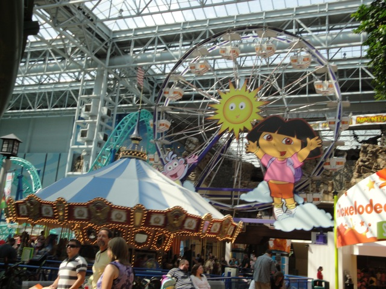
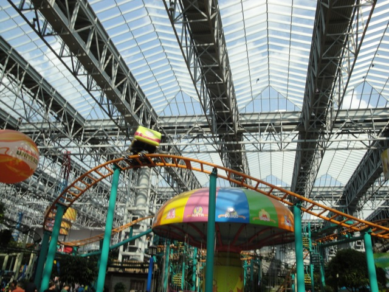
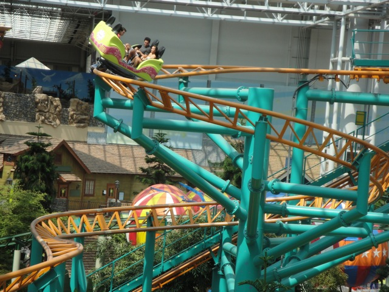
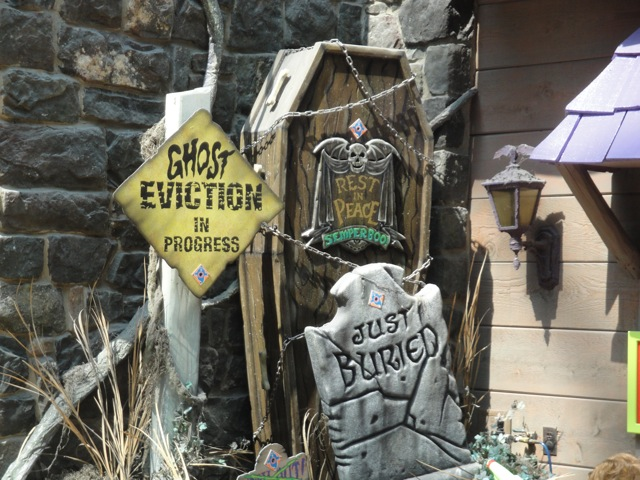

TPR's Middle America Tour
Nickelodeon Universe
Adventureland
Worlds of Fun Silver Dollar City City Museum Six Flags St. Louis Holiday World Indiana Beach Six Flags Great America Mt. Olympus Timber Falls Valleyfair
 My big trip has finally come. TPR's Middle America Trip. I can not say enough good things about this trip. So I'll show it all to you in this bigass update. First off, we started our Day Zero at the Mall of America.
My big trip has finally come. TPR's Middle America Trip. I can not say enough good things about this trip. So I'll show it all to you in this bigass update. First off, we started our Day Zero at the Mall of America.
 Wait a minute? How the hell is a mall Incrediblecoasters friendly? If we don't care for shopping at all, why the hell did we fly out 2,000 miles to some bigass mall?
Wait a minute? How the hell is a mall Incrediblecoasters friendly? If we don't care for shopping at all, why the hell did we fly out 2,000 miles to some bigass mall?
 Oh yeah. They have a theme park in here. (And for it's size, it packs quite a punch.)
Oh yeah. They have a theme park in here. (And for it's size, it packs quite a punch.)
 Unfortunetly, I mostly just filmed around on Day 0 due to the fact that I wasn't paying to ride these when I can get them for nothing tomorrow.
Unfortunetly, I mostly just filmed around on Day 0 due to the fact that I wasn't paying to ride these when I can get them for nothing tomorrow.
 Instead, we all went over to Ikea. =)
Instead, we all went over to Ikea. =)
 Bed the ride. It goes from 0 to 0 in 0. That's infinity folks.
Bed the ride. It goes from 0 to 0 in 0. That's infinity folks.
 I see a bad case of puppy love.
I see a bad case of puppy love.
 "Hmm. I wonder what color the green room is?"
"Hmm. I wonder what color the green room is?"
 This is way better than any stupid theme park.
This is way better than any stupid theme park.
 Oops. Sorry Nickelodeon Universe. I didn't mean it. You're totally better than the Ikea.
Oops. Sorry Nickelodeon Universe. I didn't mean it. You're totally better than the Ikea.

If you ever need to explore Nickelodeon Universe, just hop on Dora's wheel and she'll help you explore the place.
 Nickelodeon Universe is approved by Spongebob.
Nickelodeon Universe is approved by Spongebob.
Speaking of Spongebob, I look foreword to riding you tomorrow.
I would like a moment of silence from everyone. Today at Incrediblecoasters, we have lost a beloved member. The Canon ZR 500 has died. =( R.I.P Canon ZR 500. Bought in Hawaii in November 2006, and died in Minneapolis in August 2010, the Canon ZR 500 has lived a long healthy life serving for Incrediblecoasters. If you go to our Youtube Channel, you will see that with the exception of Volumes 1 & 2 Crap and all stuff from this trip and beyond were filmed with that video camera. It has filmed all sorts of wonders for us. From many backstage tours, to Coaster's Crazy Ejector Air, to Geauga Lake's last breath of life, to Maverick's Godliness, it has served us on many trips and general updates. And even though it died right at the begenning of a huge trip, it's workload has been more than paid off. And now, the Canon ZR 500 lives on in the memories of Incrediblecoasters, and through all the awesome stuff it filmed for us. Farewell, Canon ZR 500.
 Of coures, common sense will tell you that Incrediblecoasters would NEVER do a huge trip to many parks that we have never been to before and NOT get any footage. And since my still camera isn't of high enough quality to play the role of video camera, a trip to Best Buy was in order. (Luckily I was in a giant mall at the time of the Canon ZR 500's death.)
Of coures, common sense will tell you that Incrediblecoasters would NEVER do a huge trip to many parks that we have never been to before and NOT get any footage. And since my still camera isn't of high enough quality to play the role of video camera, a trip to Best Buy was in order. (Luckily I was in a giant mall at the time of the Canon ZR 500's death.)
 Hey Incrediblecoasters still camera. It's one of your millions of identical twins. Of course, this camera will never be as cool as you as it will most likely be used to take photos of boring events like birthday parties, and weddings, and graduations, and not cool stuff like this.
Hey Incrediblecoasters still camera. It's one of your millions of identical twins. Of course, this camera will never be as cool as you as it will most likely be used to take photos of boring events like birthday parties, and weddings, and graduations, and not cool stuff like this.
 This camera may be cheap and not that great, but I still love it, because without it, there would be no Middle America footage at all. (Too bad that was the only thing I could afford.)
This camera may be cheap and not that great, but I still love it, because without it, there would be no Middle America footage at all. (Too bad that was the only thing I could afford.)
 Welcome to the Incrediblecoasters family Samsung Camcorder.
Welcome to the Incrediblecoasters family Samsung Camcorder.
 This may look like an ordinary hotel vending machine.
This may look like an ordinary hotel vending machine.
 Wrong. This one sells sex and drugs.
Wrong. This one sells sex and drugs.
All right. The TPR Middle America Trip has officially begun!!!! =)
Not only did we have Spongebob ERT...
 But we also had bonus Avatar ERT!!!
But we also had bonus Avatar ERT!!!
 This may have been my first Intamin Half Pipe, but it certainly won't be my last. These things kick ass!!!
This may have been my first Intamin Half Pipe, but it certainly won't be my last. These things kick ass!!!
 These things spin like crazy. It's completely awesome.
These things spin like crazy. It's completely awesome.
 Every mall should have an Avatar clone in it. Especially the stupid Ventura one.
Every mall should have an Avatar clone in it. Especially the stupid Ventura one.
 And now, back to Spongebob ERT.
And now, back to Spongebob ERT.
Spongebob also has the "Goliath Effect" where it slows down dramatically at the top of the lifthill.
 Loop de Loop!!!
Loop de Loop!!!
 Spongebob also manages to have a cutback.
Spongebob also manages to have a cutback.
The Zero G Roll on Spongebob is actually quite good. You get some wicked hangtime there.
You want me to quit it with the nerdy coaster captions?
 ERT may be over, but that's not a problem since this park is so deserted.
ERT may be over, but that's not a problem since this park is so deserted.
 Pepsi Orange Streak. It's big. It's long. That's about it.
Pepsi Orange Streak. It's big. It's long. That's about it.
It's sort of what Jaguar would be like if they put it in a mall.
This may be the Pepsi Orange Streak, but really. This ride is all about American Girl.
 Insert "Pepsi Orange Streak Randomness" caption here.
Insert "Pepsi Orange Streak Randomness" caption here.
 You know this isn't even a credit guys.
You know this isn't even a credit guys.
 Don't look at me!! I'm ashamed of my credit whoring self!!!
Don't look at me!! I'm ashamed of my credit whoring self!!!
 Up next was Nickelodeon Universe's latest crazy flat ride. Brain Surge.
Up next was Nickelodeon Universe's latest crazy flat ride. Brain Surge.
THIS THING KICKS ASS!!!!!
 Just imagine the self controled 2 person Top Spin from the Santa Monica Pier combined with a teacup ride, and you pretty much get Brain Surge.
Just imagine the self controled 2 person Top Spin from the Santa Monica Pier combined with a teacup ride, and you pretty much get Brain Surge.
 Ok. Time for an Incrediblecoasteres Dumbass moment. I knew that Nickelodeon Universe had these chairswings with backwards seats. But somehow, I didn't get on them. Oh, the regret I have now. (Well, at least Cody made the same dumbass mistake I did during his visit.)
Ok. Time for an Incrediblecoasteres Dumbass moment. I knew that Nickelodeon Universe had these chairswings with backwards seats. But somehow, I didn't get on them. Oh, the regret I have now. (Well, at least Cody made the same dumbass mistake I did during his visit.)
 Final Credit of the day. The Fairly Odd Coaster.
Final Credit of the day. The Fairly Odd Coaster.

Fairly Odd Coaster with the backwards swings I missed.

You know, I've seen many coasters like this and even rode a clone of this at Worlds of Fun. And last time I checked, clones were fairly common. Guess this should be renamed to the Fairly Common Coaster.
 Fairly Common Coaster through the trees.
Fairly Common Coaster through the trees.
 Fairly Odd Coaster was actually a really good spinner.
Fairly Odd Coaster was actually a really good spinner.
 Time to get food.
Time to get food.
This McDonalds is extra Incrediblecoasters friendly. Why is that?
 This McDonalds serves Mtn Dew!!!! =)
This McDonalds serves Mtn Dew!!!! =)
Food and Pepsi sitting in a tree.
Up next, Log Chute.
"Hey? Where's the Hooters at the end of the light!!!?"
 This Log Flume is still one of the best.
This Log Flume is still one of the best.
SPLOOSH!!!!!
No, that's not a blurry picture. The Log Flume really is that fast.
What the hell is this?
Dude!!! It's a Tapico Tumbler Style Ride!!! These things are awesome!!!
 "Stupid Knotts Berry Farm. Why did you have to remove Tapico Tumbler? These are awesome!!"
"Stupid Knotts Berry Farm. Why did you have to remove Tapico Tumbler? These are awesome!!"
 Dude!! They have the Taiko Drum Game here!! Unfortunetly, I couldn't play due to being broke from buying my video camera.
Dude!! They have the Taiko Drum Game here!! Unfortunetly, I couldn't play due to being broke from buying my video camera.
 Up next, the Splat-O-Sphere.
Up next, the Splat-O-Sphere.
 Giant Frog Hoppers rule.
Giant Frog Hoppers rule.
 More Spongebob Goodness.
More Spongebob Goodness.
They even have a shooting dark ride in here.

It may not be anything special, but it's still a fun ride.
 DON'T SHOOT!!! WE SURRENDER!!!!!
DON'T SHOOT!!! WE SURRENDER!!!!!
They even managed to fit a Hammerhead style ride in here.
I think it's safe to say that Nickelodeon Universe is pretty much Knotts Berry Farm flat ride heaven.
Nickelodeon Universe also has their very own Ropes Course here.
Unfortunetly, I was unable to do it since it was an upcharge.
It actually looked like a pretty challenging course.
"I think I just sh*t myself."
 AARRGH!!!! YOU SHALL WALK THY PLANK!!!!!
AARRGH!!!! YOU SHALL WALK THY PLANK!!!!!
And now, time for more Spongebob rides.
 I'm really gonna miss this ride. It packs a powerful little punch.
I'm really gonna miss this ride. It packs a powerful little punch.
 Enjoy your hangtime guys.
Enjoy your hangtime guys.
 And now, time for dinner at Buca di Beppos.
And now, time for dinner at Buca di Beppos.
 Buca di Beppos is a family style resteraunt, where they just brings you loads and loads of food to eat.
Buca di Beppos is a family style resteraunt, where they just brings you loads and loads of food to eat.
 It was one hell of a meal.
It was one hell of a meal.
 BUMP THE NUNS!!!!
BUMP THE NUNS!!!!
 Are these girls eating sphagetti or vomiting it?
Are these girls eating sphagetti or vomiting it?
 Eew. No thanks.
Eew. No thanks.
 We may have a long drive to the middle of nowhere Iowa, but that's OK. We can pass the time by playing "Ask Robb a question."
We may have a long drive to the middle of nowhere Iowa, but that's OK. We can pass the time by playing "Ask Robb a question."
 Hooray!!! We made it to the land of Blue Bunny!!!
Hooray!!! We made it to the land of Blue Bunny!!!
Well, we made it to our hotel.
This place was f*cking tiny!! It was like the Bates Motel.
 We may be stuck in the middle of nowhere Iowa, but dammit! We're gonna have a good time.
We may be stuck in the middle of nowhere Iowa, but dammit! We're gonna have a good time.
 First up, we had our snack exchange.
First up, we had our snack exchange.
 People from all over the world broguht snacks and candy from all over the world to share.
People from all over the world broguht snacks and candy from all over the world to share.
 Here's my contribution to the snack exchange. (Divv, you better have appreciated those doritos.)
Here's my contribution to the snack exchange. (Divv, you better have appreciated those doritos.)
 "GRR!!!! I APPRECIATE ALL MY DORITOS KEVIN!!! NOW LEAVE ME ALONE WHILE I MAKE SWEET LOVE TO MY DORITOS!!!!!"
"GRR!!!! I APPRECIATE ALL MY DORITOS KEVIN!!! NOW LEAVE ME ALONE WHILE I MAKE SWEET LOVE TO MY DORITOS!!!!!"
 The good news is that some of the brits brought Double Deckers!!! =)
The good news is that some of the brits brought Double Deckers!!! =)
 The bad news is that the Double Decker was a dissapointment. =( Now Don't get me wrong. Double Deckers are still very good and above the average American Candy, but they wern't even the best thing at the snack exchange. It may just be the fact that I'm not much of a chocolate person. But the Double Decker did not live up to it's hype.
The bad news is that the Double Decker was a dissapointment. =( Now Don't get me wrong. Double Deckers are still very good and above the average American Candy, but they wern't even the best thing at the snack exchange. It may just be the fact that I'm not much of a chocolate person. But the Double Decker did not live up to it's hype.
To spice up the middle of nowhere, we brought Leslie Hall.
"Leslie, I don't feel very comfortable with you in that position."
"There we go. That's much better."
Not even the snacks were safe from Leslie Hall.
 Yup. Incrediblecoasters has met a celebrity.
Yup. Incrediblecoasters has met a celebrity.
Adventureland
Home